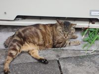
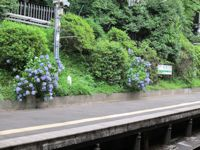
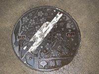
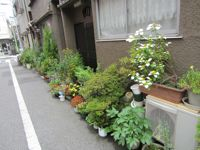
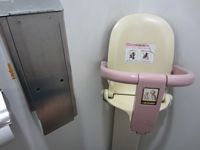
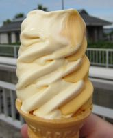
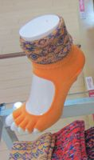

A Series of Disjointed Observations about Japan
 There are hardly any urban animals in Tokyo. I didn't see any wild mammals at all (although I'm sure they have rats) and the only birds I saw were crows and sparrows. There are cats around shrines because the monks feed them.
When you go to a restaurant you get a little towel in a plastic bag. Sometimes it's a disposable wet wipe, sometimes it's a little facecloth (hot or cold). The catch is you don't get a napkin.
 There are hydrangeas everywhere; in parks and gardens, but also growing wild by train tracks. I also spotted daylilies and hostas — it was cool to see my garden friends in their native environment.
July in Tokyo is really freaking hot. Really, and humid too. They don't report a Humidex, which is good because it'd be up in the 40s and it would make everyone feel worse.
The good people of Tokyo don't suck it up and act all stoic, they hate it and deal with it in a number of ways. Hand fans are very popular and no-one is shy about using them — lots of companies give out fans as promotional material. Everyone carries little schmattes to mop themselves with. You can buy them all over the place.
A lot of ladies carry parasols. These are distinguished from umbrellas by their eyelet lace edging. I assume if you are expecting rain and sun on the same day you have to carry both devices.
 All the manhole covers are pretty, and they're different in every area.
They have awesome transit in Tokyo. There are a bunch of different companies which provide subway and train service, but they all work together seamlessly because they use the same payment card system. Yet again the TTC looks like a bunch of bush league amateurs by comparison. (Not that they're dealing with the same size user base. But still. They could suck less.)
 No-one in Tokyo has a garden so some people get their green thumb on by creating sidewalk gardens; pots and planters on the sidewalk. I saw a rosebush in one, and a little fish pond with water plants and actual fish in another.
Most restaurants serve meals as a collection of little dishes; instead of ordering, say, steak which comes with veg and potatoes, you'd order a little plate of steak, a little plate of veg and a little plate of potatoes. And you don't order everything up front, you order a few things, then add some more stuff later if you're still hungry. (You also share with everyone, so if you don't feel like what everyone else feels like, you're screwed. Until dessert, then everyone gets what they want.)
It's a great way to eat - you can order the right amount of food and stop when you're full instead of being tempted to finish a big plateful. And you can order the exactly kind of food you want and the restaurant doesn't get to screw you by serving you a giant pile of cheap carbs and calling it a deal.
 Some of the bathroom stalls have little child seats mounted on the wall for you to park your baby when you pee. I cannot tell you how much I wanted this feature when my kids were babies!
 They have great softserve flavours. I don't know why we stick with chocolate and vanilla here, because mango-vanilla swirl is sublime. I also spotted green tea and black sesame.
Parks and playgrounds in Tokyo run the gamut from lame to non-existent. They have a few big parks, but they're not big on lawns and greenspace. I spotted a handful of playgrounds, but they all featured the same monkey bars, two swings and a metal slide. I also didn't spot any children at the playgrounds. I don't know if Japanese kids play at private playgrounds, or if they just don't play at all and are at organized activities.
They have 24-hour karaoke. (24-hour karaoke!!!)
 Shoes in Japan are awesome. Okay, plenty of women wear boring shoes, but there are some amazing shoes worn just out and about. And the fancy shoe ladies are dedicated to high heels.
To go with the shoes are lots of fancy sock options; some girls even wear socks with strappy sandals. They have sock configurations for every kind of shoes; tiny socks with lace mary-jane straps and lace trim to wear with ballet flats, socks with a split at the toe to wear with thong sandals, socks with cut-out heels for... when you feel like wearing socks with cut-out heels. Socks in Japan have gone beyond their traditional role as foot/shoe protectors; they augment the shoe.